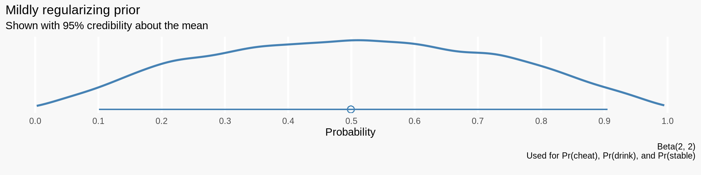
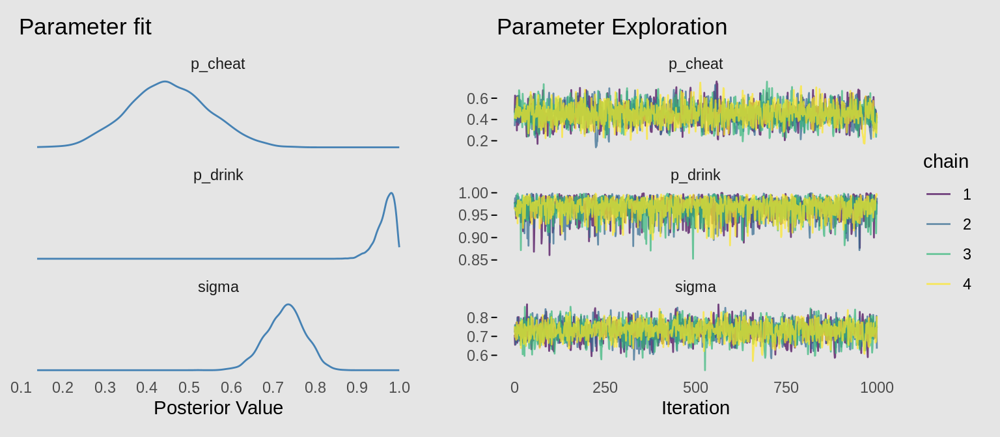
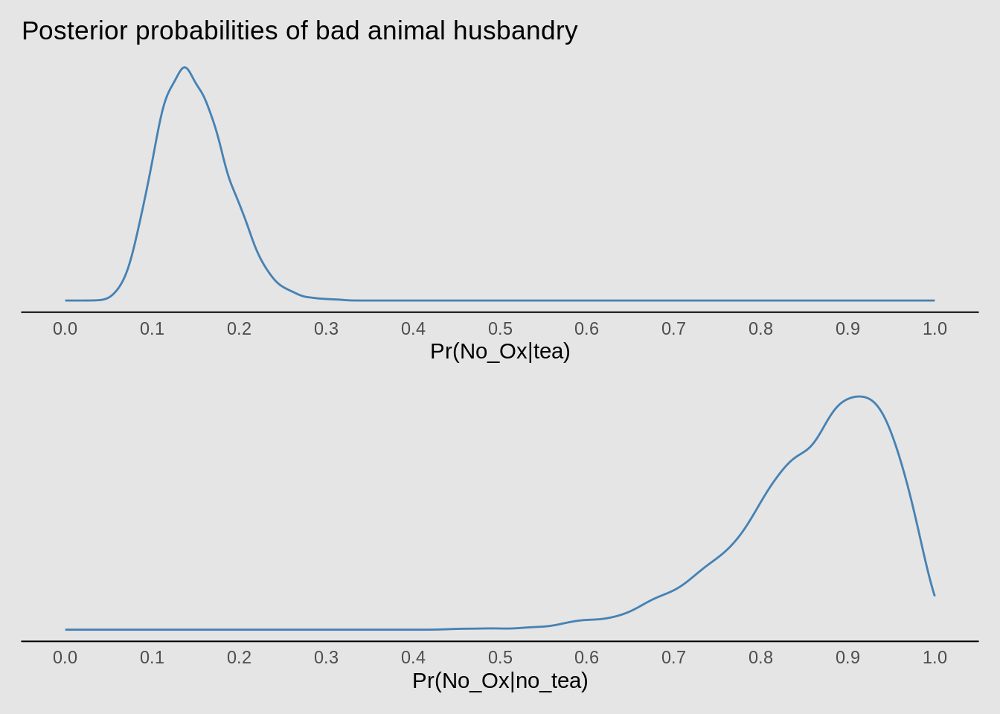

This is a retelling of Richard McElreath’s story about tea, oxen, and discrete parameters in Stan. In a Chinese village, children love tea but can only enjoy it after stabling their oxen. The problem is, children are liars sometimes and its up to us enforce the rules.
You are the village enforcer of oxen customs… Each evening, you must determine which children have properly stabled their oxen. For many houses, you can see whether or not the ox is stabled. But other houses have enclosed stables, so you cannot observe the ox without appearing to accuse that child of violating the rule. To do so and then discover a properly stabled ox would be embarrassing for everyone…
As enforcers, we think observing children drinking tea will give us some information on whether or not they stabled their Ox. We also don’t want to check every single child because we associate some personal cost to the embarrasment we’d feel if we were wrong. We need a model to help us reason about all this.
Preliminaries
This post is targeted at folks who already have an understanding of bayesian statistics. Throughout, I’ll use Stan as my primary modeling tool. There is a lot you can do to make your Stan code more efficient but this post shoots for interpretability. To learn more about Bayesian Statistics and Stan, start with my blog post here. I also highly recommend Richard’s book Statistical Rethinking and the wonderful documentation on the Stan website.
# Interface with Stan
library(rstan)
# Helpers for working with Stan
library(tidybayes)
# Stan options
options(mc.cores = parallel::detectCores())
rstan_options(auto_write = TRUE)I use R and the tidyverse to wrangle data and dispatch analyses to Stan. I think it’s excellent for data wrangling and statistics. You can learn more about the tidyverse through Hadley Wikham’s free online book R4DS. By the way, Stan is an external library that works just fine with Python too… Feel free to use whatever you’re most comfortable with.
# Tidyverse for wrangling and plotting
library(tidyverse)
# Patchwork stitches plots together
library(patchwork)
# My plot theme
theme_minimal() %+replace%
theme(panel.grid.major = element_blank(),
panel.grid.minor = element_blank(),
plot.background = element_rect(color = "transparent", fill = "#F8F8F8")) %>%
theme_set()With that out of the way, lets return to the problem at hand.
Building a model for oxen and tea
To create our model, lets think carefully about about this Chinese village and how we might build a mini mathematical replica of it. As the enforcer, we walk around our village and observe children drinking tea or not drinking tea. We also observe each child’s stall… but only some of them are uncovered. Looks like we have some “ground truth” to learn from.
Lets start by calling out some notation. We define three parameters below. Learning these parameters will help us in our decision making process.
- Let \(p_{drink} = Pr(Tea | Ox)\). This is the probability of a child drinking tea given they have stabled their ox. Zero is a plausible value here as not every child may want to drink tea.
- Let \(p_{cheat} = Pr(Tea | No\_Ox)\). This is the probability of a child drinking tea given they have not stabled their ox.
- Let \(s_i\) indicate whether or not child \(i\) has stabled their ox.
With these building blocks, lets build our little math world. Remember, \(s_i\) and \(Tea_i\) are given data for each child \(i\). These are things we can actually observe when we walk around the village. \[ \begin{align} &Tea_i \sim Bernoulli(\pi_i) & \text{[Child i drinks tea with probability } \pi_i] \\ &\pi_i = s_ip_{drink} + (1 - s_i)p_{cheat} & [\pi_i \text{ is influenced by stable status ]}\\ &s_i \sim Bernoulli(\sigma) & \text{[Average over unobservable stables with } \sigma]\\ &p_{drink} \sim Beta(2, 2) & \text{[Mildly regularizing priors]}\\ &p_{cheat} \sim Beta(2, 2) \\ &\sigma \sim Beta(2, 2) \end{align} \]
Complexity arises from the fact that we don’t observe all stables, \(s_i\). We deal with this in line 3. We let the “stabling proportion” be a parameter in our model and let Stan average over our ignorance. This means \(\sigma\) will just represent the average proportion of children who stable. We may think that it would have been better to just throw out those observations and move on… but there is information captured by the other variables that help stan understand, among other things, the average tea drinking rate regardless of stable status. In general, its good practice not to throw out the observations. Bayesian data analysis shows us how and lets us propagate our uncertainty forward to our parameter estimates.
Finally, We chose mildly regularizing priors in the last 3 lines for the probability of cheating, drinking, and proportion of children who stable. The code below simulates and plots that prior.
tdf <- tibble(x = rbeta(1e4, 2, 2))
interval <- HDInterval::hdi(tdf$x)
tdf %>%
ggplot(aes(x)) +
stat_density(geom = "line", size = 1, color = "steelblue") +
geom_segment(aes(y = 0, yend = 0,
x = interval[1], xend = interval[2]),
color = "steelblue") +
geom_point(aes(y = 0, x = mean(tdf$x)),
shape = 1, size = 3, color = "steelblue") +
scale_y_continuous(NULL, NULL) +
scale_x_continuous(breaks = seq(from = 0, to = 1, by = .1)) +
theme(panel.grid.major.x = element_line(color = "white", size = 1)) +
labs(x = "Probability",
title = "Mildly regularizing prior",
subtitle = "Shown with 95% credibility about the mean",
caption = "Beta(2, 2)\nUsed for Pr(cheat), Pr(drink), and Pr(stable)\n")
So how will we use this model once we’ve found it’s parameters? We’ll calculate new parameters that measure exactly what we need to help with our enforcing decisions. First of all, we can calculate the probability of drinking tea for any child. Below, we use the law of iterated expectations to break out the probability into known chunks. Thats just a fancy way to say you can calculate the probability of an event by looking at every “sub” event contained within it. When we see children drinking tea, they’ve either stabled their ox or they have not.
\[ \begin{align} Pr(Tea) &= Pr(Tea|Ox)Pr(Ox) + Pr(Tea | No\_Ox)Pr(No\_Ox) \\ &= p_{drink} \sigma + p_{cheat}(1 - \sigma) \end{align} \]
Leveraging Bayes formula, we can use this to figure out the probability a child is lying. When we walk around our village and notice a child drinking tea, this will give us a more informed decision as to whether or not they stabled their ox.
\[ \begin{align} Pr(No\_ox | tea) &= \frac{Pr(Tea | No\_Ox)Pr(No\_Ox)}{Pr(Tea)} \\ &= \frac{(1 - \sigma) p_{cheat}}{\sigma p_{drink} + (1 - \sigma) p_{cheat}} \end{align} \]
And finally, we can calculate the probability of a child not stabling given they are not drinking tea. Again, very important to our decision making process. \[ \begin{align} Pr(No\_ox | No\_tea) &= \frac{Pr(No\_Tea | No\_Ox)Pr(No\_Ox)}{Pr(No\_tea)} \\ &= \frac{(1 - \sigma) (1-p_{cheat})}{\sigma (1-p_{drink}) + (1 - \sigma) (1-p_{cheat})} \end{align} \]
The last two probability statements quantify the likelihood of a child not stabling their ox based on their tea drinking behavior. If we have an understanding of the “cost” of our own embarrasment, we can bake these in to a utility function that would help us understand whether or not we should check that child’s stable.
Okay, now that we’ve figured out the math, lets take it to the data,
Simulating lying children
In this section, we’ll simulate data with made up parameters then use Stan to recover them. This is something you should get use to as a Baysian practitioner. It represents the bigger picture of Bayesian data analysis. We specify the data generating process by simulating the data we are expecting to see. We then encode that simulation code in Stan but leave our unknowns as parameters. Finally, we feed Stan real data and let it search around for the paramers that best describe it.
The code below simulates our data set. Notice how we are basically encoding the mathematical model described above directly in to the code. In particular, line 23 is the R code representation of our likelihood, \(pi_i = s_ip_{drink} + (1 - s_i)p_{cheat}\).
# The seed makes our analysis repeatable
set.seed(1)
# There are 100 children in the village
N_children <- 100
# 22 stables were covered
idx_covered_stables <- sample(1:N_children, size = 22)
# The following parameters would be
# unknown in real data
# 75 Percent of children stable their ox
p_stabled <- .75
# After stabling ox, 100% of children drink tea
p_drink <- 1
# Children who didn't stable cheat by drinking tea 50% of the time
p_cheat <- .5
# Simulate a data set with our known parameters!
stabled <- rbinom(N_children, size=1, prob=p_stabled)
stabled_obs <- stabled
stabled_obs[idx_covered_stables] <- -1
tea <- rbinom(N_children, size=1,
prob=stabled*p_drink + (1-stabled)*p_cheat)
df <- tibble(stabled, stabled_obs, tea)
head(df)## # A tibble: 6 x 3
## stabled stabled_obs tea
## <int> <dbl> <int>
## 1 1 -1 1
## 2 0 0 1
## 3 1 1 1
## 4 1 1 1
## 5 1 1 1
## 6 0 0 1The data set above represents us “playing our model forward.” We picked paramers and ran it through our model to see what kind of data it would generate. Now, we “play our model backwards” by encoding it in stan and conditioning our newly uknown parameters, \(p_{drink}\), \(p_{cheat}\), and \(s_i\), on our simulated data.
If you haven’t seen Stan code before, here is a quick overview. The first section labled data just describes the kind of data we’ll pass in. The second section labled parameters tells stan which parameters it needs to solve for. There you’ll see our usual suspects. The third section labled model describes our prior and likelihood. We won’t get in to priors in this post, but this section tells Stan how to evaluate how good a set of candidate parameters are by calculating how well it describes the data.
If you look closely, the likelihood portion of our stan model is really the same as the simulation code above. log_mix might be a bit confusing, but its just doing the same thing as the mixture in our simulation above \(pi_i = s_ip_{drink} + (1 - s_i)p_{cheat}\).
data {
// Number of children in city
int n;
// Stable status (-1 is unobserved)
int stabled_obs[n];
// Observed tea drinking
int tea[n];
}
parameters{
real<lower=0,upper=1> p_cheat;
real<lower=0,upper=1> p_drink;
real<lower=0> sigma;
}
model{
// priors
p_cheat ~ beta(2,2);
p_drink ~ beta(2,2);
sigma ~ beta(2,2);
// likelihood
for (i in 1:n) {
if (stabled_obs[i] == -1) {
// stable unobserved
target += log_mix(
sigma ,
bernoulli_lpmf(tea[i] | p_drink) ,
bernoulli_lpmf(tea[i] | p_cheat));
} else {
// stable observed
tea[i] ~ bernoulli(stabled_obs[i]*p_drink + (1-stabled_obs[i])*p_cheat);
stabled_obs[i] ~ bernoulli(sigma);
}
}
}Finally, lets take our model and condition it on our simulated data to see if we recovered our parameters. The code below runs our stan model on the data.
stan_fit <- sampling(stan_model, compose_data(df),
chains = 4, cores = 4, refresh = 0,
control = list(adapt_delta = .99))
print(stan_fit, probs = c(.05, .95))## Inference for Stan model: 26162cb55bda46140f2a8d12ece76df7.
## 4 chains, each with iter=2000; warmup=1000; thin=1;
## post-warmup draws per chain=1000, total post-warmup draws=4000.
##
## mean se_mean sd 5% 95% n_eff Rhat
## p_cheat 0.60 0.00 0.09 0.44 0.74 2688 1
## p_drink 0.97 0.00 0.02 0.93 0.99 3136 1
## sigma 0.74 0.00 0.05 0.66 0.81 2024 1
## lp__ -79.89 0.03 1.22 -82.32 -78.54 1409 1
##
## Samples were drawn using NUTS(diag_e) at Fri Feb 28 22:33:46 2020.
## For each parameter, n_eff is a crude measure of effective sample size,
## and Rhat is the potential scale reduction factor on split chains (at
## convergence, Rhat=1).Indeed, we have recovered them. Our 95% credible intervals contain the original parameters from our simulation. An awesome benefit of Bayesian data analysis is that we get to work with a posterior afterwards. In the next section, we’ll take advantage of this by using this rich understanding of our parameters in our decision making process. The plot below describes the uncertainty about our parameter estimation and overlays the true values of those parameters.
df_posterior <- spread_draws(stan_fit, p_cheat, p_drink, sigma)
plot_posterior_density <- function(x, p=.95) {
.hdi <- HDInterval::hdi(x, p)
.mean = mean(x)
enframe(x) %>%
ggplot(aes(value)) +
stat_density(geom = "line", color = "steelblue") +
geom_segment(aes(y=0,yend=0, x = .hdi[[1]], xend = .hdi[[2]]),
color = "steelblue") +
geom_point(aes(y=0, x = .mean),
shape = 1, size = 2, color = "steelblue")
}
p1 <- plot_posterior_density(df_posterior$p_cheat) + ggtitle("p_cheat") +
geom_vline(xintercept = p_cheat, color = "black", linetype = 2) +
xlab("") + scale_y_continuous(NULL, NULL)
p2 <- plot_posterior_density(df_posterior$p_drink) + ggtitle("p_drink") +
geom_vline(xintercept = p_drink, color = "black", linetype = 2) +
xlab("") + scale_y_continuous(NULL, NULL)
p3 <- plot_posterior_density(df_posterior$sigma) + ggtitle("sigma") +
geom_vline(xintercept = p_stabled, color = "black", linetype = 2) +
xlab("Posterior Value") + scale_y_continuous(NULL, NULL)
(p1 / p2 / p3) *
scale_x_continuous(breaks = seq(from=0, to = 1, by = .1), limits = c(0,1)) *
theme(panel.grid.major.x = element_line(color = "white", size = 1.5),
plot.title = element_text(hjust = 0.5)) +
plot_annotation(title = "Posterior distributions recover true parameter values",
subtitle = "Shown with 95% credibility about the mean and true values as dotted lines")
To shame or not to shame
In real life, we are almost never totally certain about the true value of parameters like these. Our uncertainty is represented in the “spread” of the posterior distributions above. The cool thing about Bayesian data analysis is that we get to propagate this uncertainty forward in to our decision making process. So, based on what we know, what does tea drinking tell us about stabling oxen? The graph below uses the equations backed out earlier to describe the chances of unstabled oxen given tea status. We get this information through the magic of the posterior.
df_posterior <- spread_draws(stan_fit, p_cheat, p_drink, sigma)
df_posterior <- df_posterior %>%
mutate("Pr(No_Ox|tea)" =
((1 - sigma)*p_cheat) /
(sigma*p_drink + (1-sigma)*p_cheat))
hdi_nt <- HDInterval::hdi(df_posterior$`Pr(No_Ox|tea)`)
p1 <- df_posterior %>%
ggplot(aes(`Pr(No_Ox|tea)`)) +
stat_density(geom = "line", color = "steelblue", bw = .01) +
geom_segment(aes(y=0,yend=0, x = hdi_nt[[1]], xend = hdi_nt[[2]]),
color = "steelblue") +
geom_point(aes(y=0, x = mean(df_posterior$`Pr(No_Ox|tea)`)),
shape = 1, size = 2, color = "steelblue") +
scale_x_continuous(breaks = seq(from = 0, to = 1, by = .1),
limits = c(0, 1)) +
scale_y_continuous(NULL, NULL) +
theme(axis.line.x.bottom = element_line(),
panel.grid.major.x = element_line(color = "white", size = 1)) +
ggtitle("Posterior probabilities of bad animal husbandry",
"Shown with 95% credibility about the mean")
df_posterior <- df_posterior %>%
mutate("Pr(No_Ox|no_tea)" =
((1 - sigma)*(1-p_cheat)) /
(sigma*(1-p_drink) + (1-sigma)*(1-p_cheat)))
hdi_nn <- HDInterval::hdi(df_posterior$`Pr(No_Ox|no_tea)`)
p2 <- df_posterior %>%
ggplot(aes(`Pr(No_Ox|no_tea)`)) +
stat_density(geom = "line", color = "steelblue", bw = .01) +
geom_segment(aes(y=0,yend=0, x = hdi_nn[[1]], xend = hdi_nn[[2]]),
color = "steelblue") +
geom_point(aes(y=0, x = mean(df_posterior$`Pr(No_Ox|no_tea)`)),
shape = 1, size = 2, color = "steelblue") +
scale_x_continuous(breaks = seq(from = 0, to = 1, by = .1),
limits = c(0, 1)) +
scale_y_continuous(NULL, NULL) +
theme(axis.line.x.bottom = element_line(),
panel.grid.major.x = element_line(color = "white", size = 1))
p1 / p2
Alright, we’ve gone through a journey from a small Chinese village all the way to mixture models. So should we check in on the children’s stables when they aren’t drinking tea? Our next step would be to definie a utility function that describes how much we value embarrassment vs. catching rule breakers. We can ultimately match those up with our posterior distributions and utilize Bayesian decision theory to do whats best. This is a topic we’ll work on in another post.